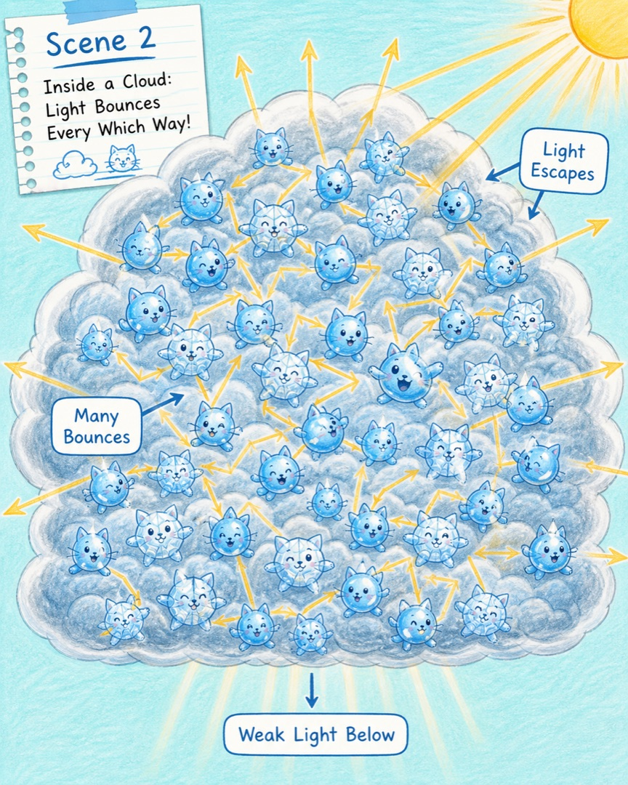
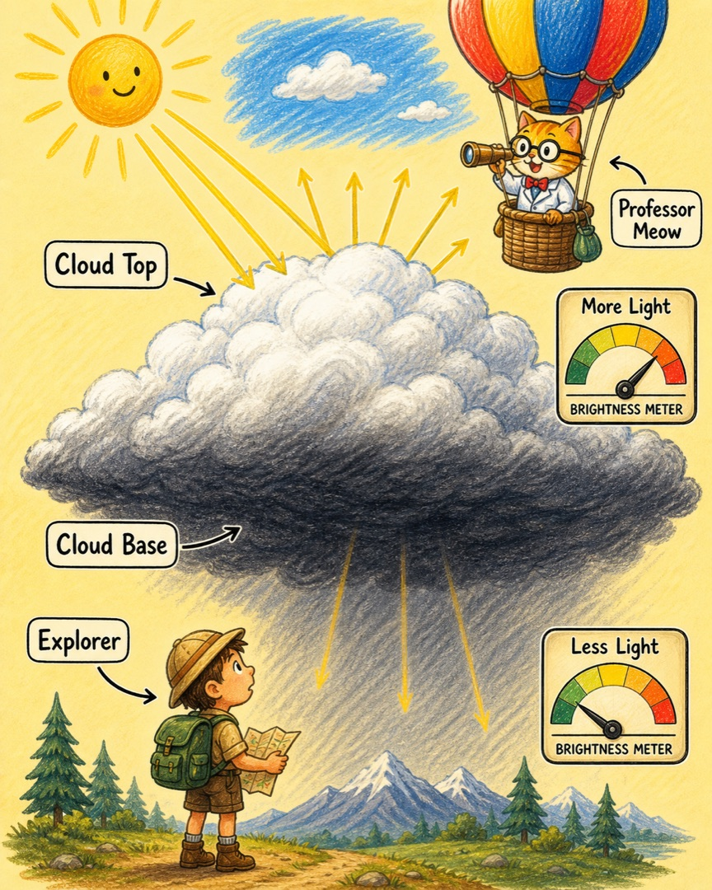
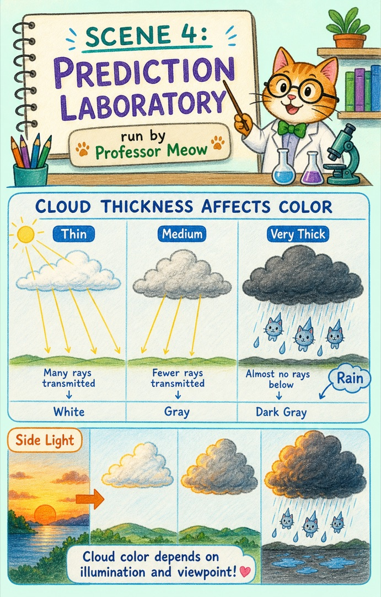
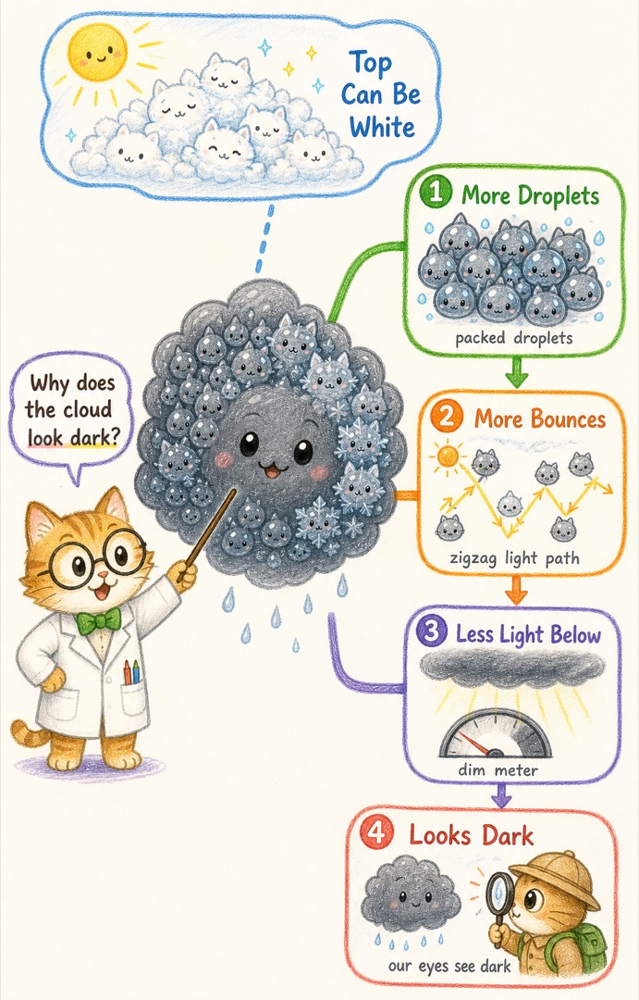

喵博士解释万物 · 给探险家的天空观察课
乌云为什么是乌的？
喵呜，乌云不是被谁涂黑了。真正发生的是：云变得又厚又密，阳光在里面被许多水滴猫和冰晶猫反复拨向四面八方，能从云底到达我们眼睛的光少了，云底就显得暗。
云明明是白色小水滴组成的，为什么聚得多了，下面反而像盖上了一床灰黑色大被子？
第一站 · 核心翻译
在我们的世界里，那其实是……
一朵云里住着数不清的小水滴猫和冰晶猫。单个成员几乎透明，却很会把阳光拨开。薄云里的光走不了多远就能出来，所以我们收到许多混在一起的各色光，看见的云接近白色。
成员更多厚云里有更多水滴和冰晶挡在光路上。
转向更多光在云中反复散射，向上方和侧面跑掉。
云底更暗从下方看，能进入眼睛的光变少，于是显得灰黑。
第二站 · 故事板 01
同一束阳光，遇到薄云和厚云

第三站 · 故事板 02
云里没有总指挥，光却越走越分散

第四站 · 故事板 03
同一朵乌云，上面可能白得发亮

第五站 · 故事板 04
现在，我们可以预测云的颜色了

探险家预测台
如果一朵云继续长高变厚，我们从正下方看，它通常会由白变灰、再变得更暗；如果云被风吹薄，更多光能穿过，云底又会变亮。
但这里有边界：厚云不一定处处都乌，薄云也不一定永远雪白。云顶、云边和迎光的一侧可以很亮；太阳快落山、周围天空特别亮，或者夜晚没有阳光时，我们看见的颜色也会改变。云的颜色是光送来的线索，不是一张固定身份证。
最后一站 · 总结地图
把整条因果链收进一张图

这就是喵博士与探险家共同找到的答案：乌云不是天生乌黑，而是厚密的云把阳光拨向了别处，让云下的我们只收到较少的光。
下一次看见乌云边缘发亮，你愿意画一画太阳、云和自己分别站在哪里吗？那张图会成为我们的下一条天空线索。